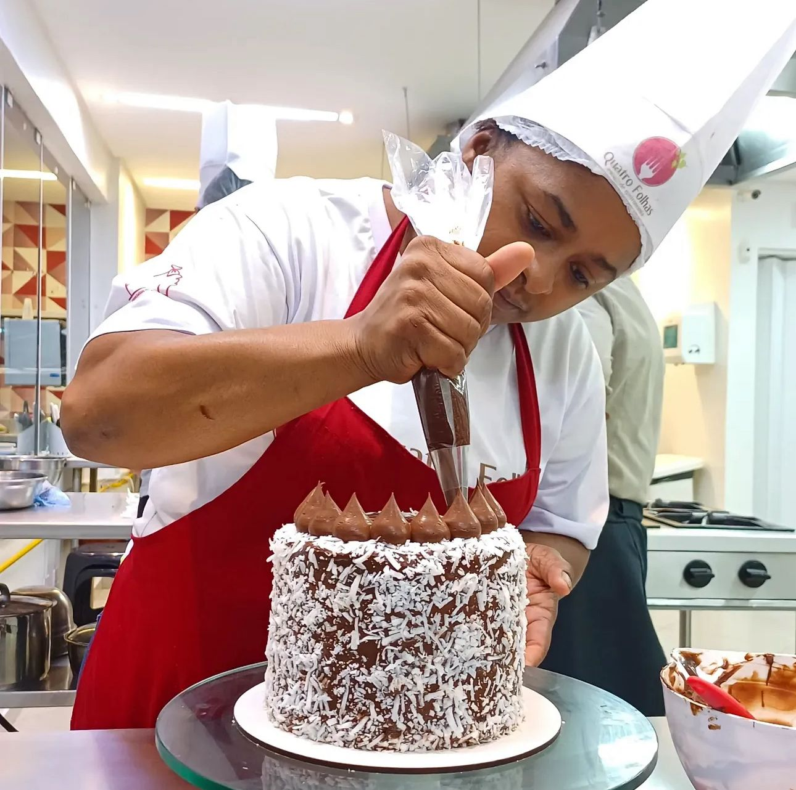

Especialização · Bolos e Doces Finos
Para vender com mais valor percebido
Eleve seus bolos e doces finos a um padrão mais profissional.
Acabamento vende antes da primeira mordida. Aprenda montagem, finalização, padronização e apresentação para criar produtos mais bonitos, consistentes e desejáveis.
Acabamento
profissional Produto
vendável
profissional Produto
vendável
Estrutura completa para praticar
Ingredientes utilizados nas aulas
Cozinha escola equipada
Utensílios e estrutura de bancada
Certificado de conclusão
FocoBolos e doces finos
FormatoAulas práticas
TurmaConsultar disponibilidade

Especialização
Bolos e doces finos
Montagem, finalização, padronização e produtos com alto valor percebido.
MontagemEstrutura, camadas, recheios e estabilidade para bolos bem executados.
AcabamentoFinalização limpa, visual profissional e apresentação mais desejável.
Doces finosPadronização, sabor, textura e cuidado visual para mesas e encomendas.
VendaProdutos com maior valor percebido para cardápios, eventos e clientes.
Resultado esperado
Produtos mais bonitos, consistentes e vendáveis.
Uma especialização para quem quer elevar o padrão visual e técnico de bolos, doces finos, encomendas e produções para eventos.
Quer entender se essa especialização combina com o seu momento?
Conversar com consultorConteúdo da especialização
Técnica aplicada ao produto que precisa impressionar
A proposta organiza processo, acabamento e apresentação para aumentar consistência e valor percebido.
Massas e bases
Estrutura, textura, sabor e preparo adequado para montagem.
Recheios e cremes
Equilíbrio, estabilidade, aplicação e combinação de sabores.
Montagem de bolos
Camadas, estrutura, proporção e acabamento inicial.
Finalização
Cobertura, decoração, detalhe e apresentação profissional.
Doces finos
Preparo, padronização, textura e visual para mesas e eventos.
Produção para venda
Processos mais claros para encomendas, vitrines e cardápios.
Apresentação
Composição, acabamento e percepção de valor do produto.
Padronização
Consistência, repetição e organização para entregar melhor.
Quer receber detalhes sobre conteúdo, datas e matrícula?
Conversar com consultorPor que fazer essa especialização
Na confeitaria, detalhe e padrão mudam a percepção do produto.
Quem vende bolos e doces finos precisa unir sabor, estabilidade, acabamento e apresentação. A especialização foi pensada para transformar técnica em produto mais valorizado.

Cozinha estruturada
Pratique em ambiente preparado para confeitaria
Bancadas, utensílios, equipamentos e organização pensados para desenvolver técnica, ritmo e segurança.

Alto valor percebido
Acabamento que valoriza a venda
A montagem e a finalização ajudam o cliente a perceber cuidado, qualidade e profissionalismo antes mesmo de provar.
Os insumos das aulas já estão incluídos
Você pratica com os ingredientes necessários para executar os preparos propostos durante a formação.
Mais clareza para encomendas e cardápios
A especialização ajuda a pensar produto, padrão e apresentação para venda em eventos, vitrines e encomendas.
Conclusão registrada pela Quatro Folhas
Ao final da especialização, o aluno recebe certificado de conclusão.
O processo
Preparar, montar, finalizar e padronizar.
O resultado
Bolos e doces com acabamento mais profissional.
Quer confirmar a próxima turma disponível?
Conversar com consultorPara quem é
Para quem quer qualificar produto, encomenda ou vitrine
A especialização conversa com quem já atua, quer vender melhor ou deseja elevar o acabamento dos próprios preparos.
Venda com mais padrão
Bolos e doces finos
Produtos com visual mais consistente ajudam a fortalecer confiança e percepção de valor.
Mesas e ocasiões especiais
Apresentação
Doces finos pedem cuidado visual, padronização e acabamento limpo.
Mais segurança técnica
Prática orientada
Aprenda processos que ajudam a repetir resultados com mais controle.
Dúvidas frequentes
O que você precisa saber
Se ainda restar alguma dúvida, envie seus dados ou fale com nossa equipe pelo WhatsApp.
Preciso já saber confeitaria?
A especialização é indicada para quem quer evoluir em bolos e doces finos, com foco em acabamento, montagem, padronização e produto vendável.
Os ingredientes estão inclusos?
Sim. Os ingredientes utilizados nas aulas estão inclusos.
A formação tem certificado?
Sim. Ao final da especialização, o aluno recebe certificado de conclusão da Quatro Folhas.
Serve para quem vende por encomenda?
Sim. A proposta conversa diretamente com quem quer elevar padrão, apresentação e valor percebido dos produtos.
Quando será a próxima turma?
A disponibilidade deve ser confirmada com a equipe. Deixe seus dados ou fale pelo WhatsApp para receber a programação.
Não encontrou sua dúvida?
Conversar com consultorContato com a escola
Consulte a próxima turma
Preencha seus dados para receber informações sobre disponibilidade, conteúdo e próximos passos da matrícula.
Atendimento individual com a equipe Quatro Folhas.
Orientações sobre turma, rotina e matrícula.
Contato pelo WhatsApp informado no cadastro.
Solicitar informações da turma
Informe seus dados para consultar a Especialização em Bolos e Doces Finos.